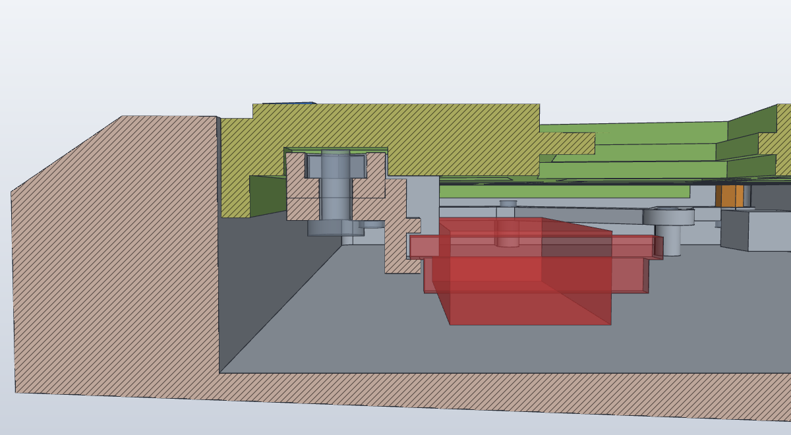

근거 · model/print_v4/README.md · docs/seam-v4-2026-11-05.md · docs/side-pairs-v3-2026-11-05.md
요약
mount 4(좌·우 pair, 중앙, 앞), plate 2조각과 spine, 컨트롤러 브래킷과 게이트, 커버 3조각. 둘레 프레임 없이 mount가 케이스 나사와 plate 지지대만 잇는다. 주문 1에 시험물 4개(B 쿠폰, 보스 탭, 이음 쿠폰 L·R)를 더한다.
JLC3DP MJF PA12 치수 공차(100 mm 이하 / 그 이상). 설계 여유 0.15–0.7은 이 공차로 보장되지 않아 주문 1 시험으로 확인한다. 최소 벽은 1.0이고, 출력 세트 16개의 벽은 모두 1.0 이상이다.
- 주문 1(시험): B 쿠폰, 보스 탭, 이음 쿠폰 L·R, mount 4개. 파일은
model/print_v4/order1/ - 구매품: 탄소강 M3×4 버튼헤드, M3 6 mm 지지대(맞변 5), Ø3×2 자석, M2 저두 나사·너트
- 주문 1 시험 결과를 v4에 반영(아래 「주문 1 시험」)
- 주문 2(본 세트): plate 2, spine, 브래킷, 게이트, 커버 3. 두 주문 모두 MJF PA12 자연 회색
근거 · docs/seam-v4-2026-11-05 · side-pairs-v3 · minimal-mount-v2 · split-v1-hardware
구조
- Z 11.5–15커버 3조각(L·T·R). 베젤 2T에 테두리 립 1. 밑면 보스(Ø5.4)가 plate 카운터보어(Ø6)에 꽂히고, 보스 끝 자석이 위 M3 나사머리를 끌어당긴다(틈 0.45).
- Z 8–13plate 2조각. X 130.881 부근에서 좌·우로 나눴다. 3층 구조(위 2 = 16.5 개구, 가운데 1.5 = 14.0 홀, 아래 1.5 = 릴리프)와 46키 배치는 원본과 같다. 두 조각을 합친 외곽은 285.8 × 95.3이다. 앞 이음(v4): 왼쪽 조각 윗면 쪽 2.4가 dovetail tab으로 나와 오른쪽 조각의 위가 열린 포켓에 꽂히고, M2×5 1개와 너트로 조인다(SO6 바로 오른쪽, 커버 T 조각 아래).
- Z 4–8.5spine. 두 조각 이음부 밑(Y 38–87)에서 M2 4개로 plate를 잇는다(폭 4). 중앙 mount의 받침(6 × 6, 상면 Z 3.95)이 0.05 아래에서 받친다. 줄기 아랫면에 배선 홈 3곳(Y 49·64·72, 폭 3 × 높이 2)이 있다.
- Z 1–9.6컨트롤러 브래킷·게이트. Pro Micro 브래킷은 별도 부품으로 plate 왼쪽 아랫면에 M2 2개로 단다. 지붕이 오른쪽 조각 앞부분(Y 13–33)을 아래에서 받친다. 게이트(M2 1개)가 −X(USB) 쪽 빠짐을 막는다.
- Z 2–8육각 지지대 6개. M3 암-암 관통 6 mm, 맞변 5. mount 육각 포켓(맞변 5.4, 깊이 1)에 앉고, 위는 M3×4, 아래는 M3×5로 잡는다.
- Z 0–3mount 4개. 좌 pair(H05·H01 ↔ SO1·SO2), 우 pair(H06·H04 ↔ SO5·SO4), 중앙(H02 ↔ SO3, spine 받침), 앞(H03 ↔ SO6, 컨트롤러 앞을 지나는 69.8 mm). 케이스 나사 자리는 방향별 장공이다.
- Z 0 기준PSD60 하우징 지지대 상면. 좌표 원점은 GH60 PCB 기준점(앞·왼쪽)이고 타이핑 경사는 뺀 값이다.



근거 · docs/seam-v4-2026-11-05 · assembly-tolerance-2026-11-04 · split-v1-hardware
맞춤 검토
plate는 여전히 가장 비싼 출력물이다. 다만 두 조각으로 나뉘어 한쪽만 다시 뽑을 수 있게 됐다. 어긋남은 mount, spine, shim 같은 작은 부품과 조립 순서로 먼저 흡수하고, plate는 사포질 이상으로 손대지 않는다.
판정은 JLC 규격 최악값과 모델 여유를 비교한 것이다. 지지대 간격과 plate 조각 행의 최악값은 이 페이지를 만들며 계산했다.
| 맞닿는 곳 | 최악 어긋남 | 설계가 흡수하는 양 | 판정 | 안 맞으면 |
|---|---|---|---|---|
| 케이스 ↔ mount케이스 나사 6 | 0.931차 대략 실측 H 위치와 GH60 채택 좌표 차이 최대(H03 Y). 정밀 실측은 하지 않기로 했다(2026-11-05) | ±1방향별 장공: H01·H05는 X, H02·H03·H04·H06은 Y. M2 기준 지정축 약 ±1.2, 직교 ±0.2. H05는 ±0.9 | 주문 1 mount로 확인 | 장공을 줄로 늘리거나 그 mount만 다시 출력 |
| mount ↔ platepair 하나의 지지대 2개 | 0.6좌 pair SO1↔SO2 81.4, 우 pair SO5↔SO4 약 87. 두 부품 ±0.3씩 | 0.4plate M3 구멍 Ø3.4(편측 0.2) × 2. 중앙·앞 mount는 지지대가 1개라 해당 없음 | 부족할 수 있음 | mount 쪽 육각 포켓을 그 방향으로 줄로 넓히거나 mount만 다시 출력. plate 구멍은 건드리지 않는다 |
| plate 좌 ↔ 우 ↔ spine | ±0.55조각 길이 약 137 × 0.4% | 0.15–0.5앞 이음 tab ↔ 포켓 사방 0.15, spine 이음 맞춤 X 0.15, 뒤 Y 0.4, 조각 사이 0.5. M2 구멍 Ø2.4 | 이음 쿠폰 | tab이 빡빡하면 tab 옆면을 줄로, 헐거우면 에폭시로 채운다. spine은 다듬거나 spine만 다시 출력 |
| spine ↔ 중앙 받침 | 0.05공칭 틈. 출력 오차는 포함하지 않음 | shim 0–0.1절연 박판 | 현물 맞춤 | shim 두께를 바꾸거나 받침 윗면을 사포로 |
| 하우징 벽 ↔ plate 외곽 | 약 1.0조각 길이 오차 약 0.55 + 조립 위치 0.5 | 0.3외곽 틈. plate 보호 변형은 0.8 | 부족할 수 있음 | 닿는 곳만 그 조각 가장자리를 사포로. 심하면 그 조각만 다시 출력 |
| 컨트롤러 브래킷 ↔ 앞 mount 패드 | — | 0.3모델 최소 간격 | 공칭값 | 패드를 줄로 |
| USB 아웃렛 ↔ 좌 pair | 글루r2에서 쓰던 아웃렛이 이미 케이스에 핫멜트로 붙어 있다 | 1.02가정 점유 기준 최소 거리 | 현물 확인 | 글루 덩어리는 조립하며 깎는다. 지지대 높이를 넘지 않는다(사용자 확인) |
| 위 M3 머리 ↔ 카운터보어 | Ø5.7 | 반경 0.15Ø6 카운터보어 | 공차 보장 아님 | 카운터보어를 드릴이나 줄로 넓힌다(머리 아래 plate 살 1.5는 유지) |
| 커버 보스 ↔ 카운터보어 | Ø5.4 | 반경 0.3 | 여유 있음 | B 쿠폰 결과로 보스 지름을 정하고 그 커버 조각만 다시 출력 |
| 스위치 46 ↔ 14.0 홀 | 홀 ±0.4홀 층은 16.5 개구 위로 1.25 돌출 출력 | B 쿠폰 행 C13.7–14.3, plate와 같은 출력 방향 | 시험 전 | 빡빡하면 16.5 개구로 바늘줄을 넣어 14.0 홀을 다듬는다. 헐거우면 아래 릴리프 쪽에서 접착 |


근거 · docs/seam-v4-2026-11-05 · model/print_v4/README.md · model/measurements/README.md · docs/side-pairs-v3
열린 항목
- 위험
배선이 plate 밑 8까지 내려온다
1차 실측(M14)에서 plate 밑면부터 배선 최하단까지가 8이었다. plate 밑면은 Z 8이라 배선이 Z 0 근처까지 내려온다. 둘레 프레임이 없어졌으므로 문제가 되는 곳은 mount(Z 0–3), spine(Z 4–8.5), 컨트롤러 브래킷과 겹치는 경로뿐이다. 8 mm 한 값만으로 키 높이를 올리지 않고, 실제 배선 경로를 그려 겹치는 곳을 먼저 찾는다. spine을 건너는 행 배선은 줄기 아랫면 홈 3곳(Y 49·64·72)으로 지난다. 실제 배선 위치가 다르면 홈을 옮긴다.
- 위험
긴 앞 mount(H03–SO6, 69.8 mm)
케이스 나사 1개와 지지대 1개를 잇는 가장 긴 어댑터다. 굽힘과 층간 파손, 반복 탈착 후 들뜸을 국부 시험에서 가장 먼저 본다.
- 확인
앞 이음은 나사 1개
이음면에서 커버 창 끝까지 약 6.5 mm뿐이고 그 뒤 아래에는 브래킷이 있어 M2를 하나만 넣었다. 브래킷 지붕이 오른쪽 조각 앞부분을 받친다. 접착 여부는 가조립 뒤 누름 시험으로 정한다(조립 11).
- 확인
pair의 지지대 간격 흡수 0.4 < 규격 최악 0.6
좌·우 pair는 지지대 2개가 한 부품에 있어 서로 움직이지 않는다. plate 구멍 여유로 0.4까지만 흡수된다. 넘치면 mount 쪽을 고친다.
- 확인
중앙 처짐과 shim
둘레 프레임이 없어 전체 강성이 plate와 spine에 더 의존한다. 중앙 받침 틈 0.05을 shim으로 맞춘 뒤 눌렀을 때 들뜸과 휨을 본다.
- 확인됨
USB 아웃렛은 r2 그대로
r2에서 쓰던 inside 케이블(C 암 아웃렛 ↔ Pro Micro 플러그)을 그대로 쓴다. 아웃렛은 이미 케이스에 핫멜트로 붙어 있어 홀더 없이 점유 영역만 둔다. 글루 덩어리가 좌 pair(여유 1.02)에 닿으면 조립하며 깎는다.
- 확인
H05 조정 끝의 남은 살 약 2.0
H05는 머리 자리 없이 X ±0.9 조정한다. 조정 끝에서 체결할 때 살이 깨지지 않는지 본다.
- 확인
커버를 들어 올릴 손톱 여유
1차 대략 실측은 테두리 14다. 지금 높이(베젤 밑면 Z 13)에서는 베젤이 테두리보다 1 낮고 커버 윗면만 1 솟아 손톱이 들어가기 어렵다. 커버를 받아 본 뒤 정한다. 그대로면 자석 없는 끝의 립을 끊고 밑면을 모따기하거나 들어 올릴 홈을 낸다.
- 구매
보유 나사·지지대는 그대로 못 쓴다
커버 자석이 붙어야 하므로 위 M3 버튼헤드는 탄소강이어야 하는데 보유 나사는 스테인리스다(1차 실측 M13). 보유 5 mm 지지대는 맞변 4.33이라 맞변 5 포켓과 맞지 않는다. 자석 Ø3×2와 함께 새로 산다(「부품과 구매품」).
- 업체
재료 MJF PA12(자연 회색)와 업로드
재료는 MJF PA12-HP 나일론, 자연 회색으로 정했다(2026-11-05). 주문 1과 주문 2는 같은 재료·같은 색으로 한다. MJF에는 FDM의 최소 부품 크기 규칙이 없고, 최대 370 × 276 × 360이라 모든 부품이 들어간다. 업로드 때 얇은 벽 경고가 뜨면
model/print_v4/README.md의 「MJF 전환」 절과 맞춰 본다. 남은 1.0 미만 값은 벽이 아니라 모서리 끝뿐이다. - 확인
케이스 나사 규격과 지지대 높이
호칭경 2만 기록됐다. 정밀 실측 대신 주문 1의 mount 4개를 실제로 케이스 나사로 고정해 길이·머리·유효 깊이와 지지대 높이 차이를 확인한다. 높이가 다르면 XY 장공으로 풀지 않고 접촉면 높이와 스페이서를 검토한다.
- 주문 대기
주문 1(시험 출력)
B 쿠폰·보스 탭·이음 쿠폰 L·R·mount 4개의 STL/STEP을
model/print_v4/order1/에 내보냈다. 결과로 홀 크기, 보스 여유, 이음 여유, 장공 범위를 정한 뒤 주문 2를 넣는다. jig A는 폭 285.8로 업체 한도 250을 넘어 mount 4개로 대신했다. - 검토
plate 보호 변형에서 옮겨 올 것
원본 계열 변형(
46es_draft_sketches_plate_protect.sc)의 plate 외곽 틈 0.8과 맞춰 놓고 조이는 순서를 v4에 옮길지 정한다. 순서는 이 페이지의 조립 03–08에 이미 반영했다.
근거 · 모델 바디(자동) · model/print_v4/README.md 재료·하드웨어
부품과 구매품
| 출력 부품 | 수량 | 부피 | X × Y × Z mm | 출력 방향 | 내용 |
|---|---|---|---|---|---|
좌 mount pairMOUNT_L_PAIR_V3 | 1 | 2.6 cm³ | 31 × 92 × 3 | 자유(MJF) · STL은 밑면이 아래 | 주문 1 · H05·H01 ↔ SO1·SO2. USB 아웃렛을 피해 꺾인다 |
우 mount pairMOUNT_R_PAIR_V3 | 1 | 2.3 cm³ | 40 × 93 × 3 | 자유 · STL은 밑면이 아래 | 주문 1 · H06·H04 ↔ SO5·SO4 |
중앙 mountMOUNT_H02_SO3_MIN_V2 | 1 | 1.4 cm³ | 13 × 51 × 4 | 자유 · STL은 밑면이 아래 | 주문 1 · H02 ↔ SO3. spine 받침 6 × 6 |
앞 mountMOUNT_H03_SO6_MIN_V2 | 1 | 1.6 cm³ | 70 × 13 × 3 | 자유 · STL은 밑면이 아래 | 주문 1 · H03 ↔ SO6. 굽힘·층간 확인 1순위 |
plate 왼쪽PLATE_L_SPLIT_V1 | 1 | 38.1 cm³ | 143 × 95 × 8 | 자유, 판을 수평으로 요청 · STL은 윗면이 아래 | 주문 2 · 3층. SO1·SO2·SO3·SO6 카운터보어, 앞 이음 tab |
plate 오른쪽PLATE_R_SPLIT_V1 | 1 | 40.6 cm³ | 154 × 95 × 8 | 자유, 판을 수평으로 요청 · STL은 윗면이 아래 | 주문 2 · 3층. SO4·SO5 카운터보어, 앞 이음 포켓·너트 포켓 |
spinePLATE_SPINE_V1 | 1 | 1.7 cm³ | 30 × 49 × 4 | 자유 · STL은 윗면이 아래 | 주문 2 · M2 4개와 너트로 두 조각을 잇는다. 배선 홈 3곳 |
컨트롤러 브래킷CTRL_BRACKET_SPLIT_V1 | 1 | 1.4 cm³ | 36 × 29 × 7 | 자유 · STL은 지붕이 아래 | 주문 2 · plate에 M2 2개. PCB 1.6 + 0.3 홈 |
게이트CTRL_GATE_SPLIT_V1 | 1 | 0.2 cm³ | 8 × 11 × 8 | 자유 · STL은 너트 포켓 면이 아래 | 주문 2 · M2×5 1개와 너트. 풀면 PCB를 −X로 뺀다 |
커버 LCOVER_L_DRAFT_TBD | 1 | 5.8 cm³ | 102 × 95 × 4 | 자유, 판을 수평으로 요청 · STL은 윗면이 아래 | 주문 2 · SO1·SO2 보스 |
커버 TCOVER_T_DRAFT_TBD | 1 | 5.2 cm³ | 88 × 95 × 4 | 자유, 판을 수평으로 요청 · STL은 윗면이 아래 | 주문 2 · SO3·SO6 보스 |
커버 RCOVER_R_DRAFT_TBD | 1 | 6.2 cm³ | 129 × 95 × 4 | 자유, 판을 수평으로 요청 · STL은 윗면이 아래 | 주문 2 · SO4·SO5 보스 |
이음 쿠폰 LSEAM_COUPON_L_V4 | 1 | 1.6 cm³ | 25 × 22 × 8 | 자유, 판을 수평으로 요청 · STL은 윗면이 아래 | 주문 1 · plate 왼쪽 앞 이음 부분을 그대로 잘라낸 시험물 |
이음 쿠폰 RSEAM_COUPON_R_V4 | 1 | 1.5 cm³ | 19 × 22 × 8 | 자유, 판을 수평으로 요청 · STL은 윗면이 아래 | 주문 1 · plate 오른쪽 같은 부분. M2×5 + 너트 1조로 조여 본다 |
부피와 크기는 모델에서 읽은 값이다(합계 110.3 cm³). JLC3DP 최소 부품 크기 30 × 30 × 10보다 작은 부품: 중앙 mount, 앞 mount, 컨트롤러 브래킷, 게이트, 이음 쿠폰 L, 이음 쿠폰 R. 두께가 10보다 얇은 부품: 좌 mount pair, 우 mount pair, plate 왼쪽, plate 오른쪽, spine, 커버 L, 커버 T, 커버 R. 접수 가능 여부를 업체에 확인한다.
| 구매품 | 수량 | 규격·후보 | 정할 것 |
|---|---|---|---|
| M3 암-암 관통 지지대 | 6 | 길이 6, 맞변 5. 후보 Harwin R30-1000602 | 보유 5 mm 지지대(맞변 4.33)는 맞지 않음 |
| M3 버튼헤드(위) | 6 | M3×4 ISO 7380, 탄소강. 후보 Würth 00600134 | 자석이 붙어야 함. 보유 나사는 스테인리스 |
| M3 버튼헤드(아래) | 6 | M3×5 ISO 7380. 재질 무관. 후보 Würth 00600135 | 물림 3. 위 나사 끝과 0.5 간격 |
| M2 저두 나사 ×6 | 6 | 브래킷 2 + spine 4. 머리 Ø4 × 1.1. 후보 NBK SSH-M2-6 | 와셔 없음 |
| M2 저두 나사 ×5 | 2 | 게이트 1 + 앞 이음 1(v4). 후보 NBK SSH-M2-5 | 게이트는 아래에서 위로, 이음은 위에서 아래로 |
| M2 너트 | 8 | DIN 934, 맞변 4 × 높이 1.6 | 포켓 맞변 4.4. 깊이 1.8(브래킷·spine·게이트), 1.0(앞 이음) |
| 케이스 나사 | 6 | PSD60 기존 나사(M2, 1차 실측 호칭경 2). 머리 자리 Ø4.4 × 1 | 주문 1 mount로 길이·머리 확인 |
| 네오디뮴 자석 | 6 | Ø3 × 2, N52(없으면 N35). 커버 보스 포켓 Ø3.2 × 2.1에 접착. 시험·예비 포함 20개 묶음. MJF 전환으로 Ø4에서 바꿨다(보스 둘레 벽 0.6 → 1.1) | 흡착력은 보스 탭으로 |
| 2액형 에폭시(선택) | — | 앞 이음 tab 접착용 | 가조립 누름 시험 뒤(조립 11) |
| 중앙 shim | 시험분 | 절연 박판 | 공칭 틈 0.05에 맞춰 0–0.1 |
| 스위치 | 46 | Gateron KS-3 Milky Yellow Pro, 5핀, MX 호환 | 걸쇠 위치·폭(M19) |
| 키캡 | 46 | 1u 43 · 1.25u 1 · 2.25u 1 · 2u 1. 스태빌라이저 없음 | 키캡 하단·스트로크(M17) |
| Pro Micro | 1 | 33 × 18, ATmega32U4, Micro-B, 높이 4(1차 실측) | 보드 변형(M15) |
| USB inside 케이블 | 1 | r2에서 쓰던 것(C 암 아웃렛 ↔ Pro Micro 플러그). 아웃렛은 케이스에 이미 접착 | 추가 구매 없음 |
| 다이오드 · 배선 | 46 | 4행 × 12열 매트릭스, 신호선 16 | 점유 높이·경로(M14) |
공구: 2 mm 육각 렌치(M3 ISO 7380), 1.3 mm 육각 렌치(M2 저두), 케이스 나사용 드라이버, 핀셋(너트), 캘리퍼, 바늘줄, 사포, 순간접착제, 2액형 에폭시(선택), 글루스틱 또는 핫글루, 납땜 도구.
근거 · model/print_v4/README.md · docs/seam-v4-2026-11-05 · side-pairs-v3 · split-v1-hardware 체결 스택
조립 순서
출력은 두 번으로 나눈다. 주문 1(B 쿠폰, 보스 탭, 이음 쿠폰, mount 4개)로 맞춤을 확인한 뒤 주문 2(plate, spine, 브래킷, 게이트, 커버)를 넣는다. 파일과 재료(MJF PA12 자연 회색)는 model/print_v4/README.md에 있다. 아래 순서는 v4 모델 기준이다.
준비
- 01
출력물 손질과 끼움 확인
- 남은 가루를 털어낸다. plate 14.0 홀 층 가장자리, 카운터보어 바닥, 브래킷·게이트의 너트 포켓과 1.4 받침에 가루가 뭉쳐 있지 않은지 특히 본다.
- M3 지지대를 mount 육각 포켓(맞변 5.4)에 넣어 돌지 않는지, M2 너트가 포켓(맞변 4.4 × 깊이 1.8)에 들어가는지 본다.
- 커버 보스를 나사 없는 카운터보어에 꽂아 본다.
확인지지대가 포켓에서 헛돌지 않는다.안 맞으면빡빡하면 포켓을 바늘줄로 다듬는다. 헐거워서 돌면 그 mount만 다시 출력한다. - 02
커버 자석 붙이기
보스 끝 포켓 6곳(Ø3.2 × 2.1)에 Ø3 × 2 자석을 순간접착제로 붙인다. 상대가 강철 나사머리라 극성은 상관없다. 다 굳은 뒤 다음 단계로 간다.
확인자석 면이 보스 끝보다 튀어나오지 않는다.
mount 맞추기 · 처음 한 번, 그리고 mount나 plate를 바꿨을 때
- 03
mount에 지지대 고정
케이스 밖에서 한다. 각 mount 포켓에 M3 지지대를 넣고 아래에서 M3×5로 조인다. 좌 pair는 SO1·SO2, 우 pair는 SO4·SO5, 중앙은 SO3, 앞은 SO6이다.
확인지지대가 포켓 바닥(Z 2)에 붙어 있고 돌지 않는다.
- 04
케이스 나사를 가볍게
mount 4개를 하우징 지지대에 놓고 케이스 나사 6개를 손으로만 돌린다. 좌 pair는 H05·H01, 우 pair는 H06·H04, 중앙은 H02, 앞은 H03이다. 장공 방향은 H01·H05가 X, 나머지가 Y다.
확인모든 나사가 억지 없이 걸린다.안 맞으면안 걸리면 그 장공 방향으로 어긋난 것이다. 장공을 줄로 늘리거나 그 mount만 다시 출력한다.
- 05
plate 앞 이음 맞추기
- 오른쪽 조각을 윗면이 위로 오게 놓고, 왼쪽 조각을 위에서 내려 tab을 오른쪽 포켓에 꽂는다. 옆으로 밀어 넣지 않는다(dovetail이라 위에서만 들어간다).
- 오른쪽 조각 아랫면 육각 포켓에 M2 너트를 넣고(포켓은 이음면 쪽이 열려 있으니 손가락으로 받친다), tab 위 카운터보어에서 M2×5를 조인다.
- 이음 쿠폰에서 정한 대로 손질한 상태여야 한다(주문 1 시험).
확인윗면 단차가 손톱에 걸리지 않고, 나사머리가 윗면 아래에 묻힌다.안 맞으면빡빡하면 tab 옆면을 줄로 조금 다듬는다. 헐거우면 지금은 그대로 두고 조립 11에서 접착을 정한다.위에서 본 앞 이음. 녹색이 왼쪽 조각이다. - 06
spine으로 이음부 아래 잇기
앞 이음을 조인 plate를 뒤집어, 이음부 밑에 spine을 대고 M2×6 4개와 너트로 잇는다. 스위치와 배선 전이어도 된다.
확인이음부가 억지 없이 닫히고 SO3·SO6 자리는 왼쪽 조각에 있다.안 맞으면빡빡하면 spine 쪽을 다듬거나 spine만 다시 출력한다.
아래에서 본 모습. - 07
plate 임시 장착으로 위치 맞추기
이은 plate를 mount 지지대 위에 얹는다. SO1·SO2, SO4·SO5가 힘 없이 맞도록 mount를 장공 안에서 옮긴다. 중앙 받침과 spine 사이 틈을 보고 shim 두께를 정한다.
확인6곳 모두 나사 없이 plate 구멍과 지지대 구멍이 맞는다.안 맞으면pair의 두 지지대 간격이 plate와 다르면 mount 쪽 포켓을 줄로 넓힌다(열린 항목 4).
- 08
plate를 떼고 케이스 나사 조이기
공구가 닿지 않으면 plate를 들어낸 뒤 케이스 나사 6개를 조인다. 나사가 1개뿐인 중앙·앞 mount가 조이는 동안 돌지 않았는지 본다. USB 아웃렛은 r2 때 케이스에 붙여 둔 그대로 쓴다. 글루 덩어리가 좌 pair에 닿으면 깎는다.
확인조인 뒤 plate를 다시 얹어도 6곳이 맞는다.
plate 모듈
- 09
스위치 46개 끼우기
plate 조립품을 작업대에 두고 위에서 끼운다. 걸쇠가 14.0 홀 층(1.5) 아래 릴리프에 걸리고, 플랜지는 plate 윗면보다 2 아래(16.5 개구 안)에 앉는다.
안 맞으면빡빡하면 16.5 개구로 바늘줄을 넣어 14.0 홀을 다듬는다. 헐겁거나 걸쇠가 안 걸리면 아래 릴리프 쪽에서 접착한다.
- 10
컨트롤러 브래킷 · Pro Micro · 게이트
- 브래킷을 plate 아랫면에 M2×6 2개와 너트로 단다.
- Pro Micro를 부품면이 아래로 가게 브래킷 홈에 −X(USB) 쪽에서 밀어 넣는다.
- 게이트를 대고 M2×5를 아래에서 위로 조인다. 너트는 게이트 위쪽 포켓에 들어간다.
확인브래킷 M2 끝과 PCB 사이가 0.3 남는다. 게이트를 풀면 PCB가 −X로 빠진다.안 맞으면홈이 빡빡하면 턱을 줄로, 헐거우면 테이프로 심을 댄다.
아래에서 본 모습. 빨강은 Pro Micro와 USB 플러그 점유. - 11
가조립 누름 시험 → 이음 접착 여부
- 스위치와 브래킷을 단 상태에서 가운데 아래쪽 키와 이음 가까운 키를 눌러 본다.
- 이음부에 단차가 생기거나 삐걱이면 앞 이음 M2를 풀고 tab 아래·옆을 사포로 거칠게 하고 탈지한 뒤 2액형 에폭시를 바르고 다시 조인다. 나일론은 매끈하면 잘 붙지 않는다. 핫멜트는 쓰지 않는다.
- 괜찮으면 나사만으로 둔다(나중에 한쪽만 바꿀 수 있다).
확인눌러도 이음부 윗면이 벌어지거나 어긋나지 않는다.안 맞으면접착 뒤에도 움직이면 spine M2와 브래킷 M2가 다 조여졌는지 본다. - 12
배선
- 4행 × 12열 매트릭스를 다이오드와 함께 배선한다. 펌웨어 JSON 기준 행 D1·D0·D4·C6, 열 D7·E6·B4·B5·F4·F5·F6·F7·B1·B3·B2·B6.
- Pro Micro 배선은 PCB 윗면(plate 쪽)에서 한다.
- 행 배선이 seam을 건너는 곳은 spine 줄기 아랫면 홈(Y 49·64·72)으로 지나간다. 배선을 시작하면 두 조각을 다시 벌리기 어렵다.
- inside 케이블 플러그를 Pro Micro에 꽂는다.
확인mount·spine·브래킷과 겹치는 곳에서 배선이 그 부품 윗면까지 내려오지 않는다. 1차 실측은 plate 밑 8이었다(열린 항목 1).
합치기
- 13
plate 모듈 장착
중앙 받침 위에 shim을 놓고 plate 모듈을 지지대에 얹은 뒤 위 M3×4(탄소강) 6개를 조인다. inside 케이블은 하우징 뒤쪽 USB 아웃렛으로 보낸다.
확인plate가 하우징 벽 어디에도 닿지 않는다(설계 틈 0.3). 위·아래 나사 끝이 서로 닿지 않는다(공칭 0.5).안 맞으면벽에 닿으면 그 조각 가장자리를 사포로 다듬는다.
- 14
커버 3조각 올리기
L(SO1·SO2), T(SO3·SO6), R(SO4·SO5)을 순서 상관없이 올린다. 보스가 카운터보어에 꽂히고 자석이 0.45 아래 나사머리를 끌어당긴다.
안 맞으면보스가 안 들어가면 보스를 줄로 깎거나 그 조각만 다시 출력한다.
- 15
키캡
맨 아랫줄은 왼쪽부터 1.25u · 1u · 2.25u · 2u · 1u · 1u, 나머지는 1u다. 스태빌라이저는 쓰지 않는다.
근거 · docs/assembly-revision.md 분해·점검 절차 · minimal-mount-v2 조립
정비할 때
- 01
USB 케이블을 뺀다
- 02
커버를 벗긴다
자석은 조각마다 한쪽 끝에 몰려 있다. 자석이 없는 쪽 끝을 들어 벗긴다. 키캡이 걸리면 그 키캡만 먼저 뽑는다.
- 03
위 M3×4 6개만 푼다
mount, 지지대, 케이스 나사는 하우징에 그대로 남는다.
- 04
plate 모듈을 꺼낸다
plate 두 조각, spine, 스위치, 배선, Pro Micro가 한 덩어리로 들린다. 조금 들어 올린 상태에서 inside 케이블 플러그를 뽑는다.
- 05
Pro Micro만 바꿀 때
꺼낸 모듈을 뒤집어 게이트 M2를 풀고 PCB를 −X로 빼낸다. 스위치 납땜은 건드리지 않는다.
- 06
mount나 plate를 바꿀 때
케이스 나사를 풀어 해당 mount만 바꾸고, 조립 03–08(mount 맞추기)을 다시 한다. 앞 이음을 접착했다면 plate는 두 조각을 함께 바꾼다.
근거 · model/print_v4/README.md · samples/README.md 시험 절차 · side-pairs-v3 국부 시험
주문 1 시험
전체 케이스 지그(jig A)는 쓰지 않는다. 실제 mount 4개가 같은 것을 더 많이 확인한다. 주문 1의 시험물과 mount로 먼저 확인하고, 결과를 v4에 반영한 뒤 주문 2를 넣는다. 부품을 눌러 억지로 맞춘 결과는 합격으로 치지 않는다. 시험물은 본 세트와 같은 MJF PA12 자연 회색으로 뽑는다.
| 시험 | 출력물 | 확인과 채택 기준 | 상태 |
|---|---|---|---|
| 스위치 홀 | B 쿠폰 행 A·B·C | Gateron Milky Yellow 삽입력, 걸쇠, 키캡 뽑을 때 딸려 나오는지. 행 C는 플랜지가 평평하게 앉는지와 홀 가장자리 처짐 → TBD_sw_hole | 주문 1 전 |
| 나사·포켓 | B 쿠폰 행 D | M2·M3 구멍 통과, 카운터보어에 버튼헤드가 앉는지, 육각 포켓에 지지대가 미끄러지되 돌지 않는지 | 주문 1 전 |
| 커버 보스·자석 | 보스 탭 + B 쿠폰 카운터보어 | 보스 끼움, 보스 벽(1.3)이 깨지지 않는지, Ø3 자석이 평면 포켓 3.2 / 3.3 / 3.4 중 어디에 맞는지, 자석을 붙이고 탄소강 M3×4를 넣은 상태에서 뒤집어도 붙어 있는지 | 주문 1 전 |
| 축척 오차 | B 쿠폰 외곽 | 145.35 × 74.15 × 10을 재어 오차율을 구하고 plate 외곽 틈을 다시 본다 | 주문 1 전 |
| 앞 이음 | 이음 쿠폰 L·R + M2×5·너트 | tab이 힘 없이 들어가는지, 윗면 단차, 조인 뒤 흔들림·누름 → 이음 여유(지금 사방 0.15, 업체 권장 0.2–0.4보다 작다). 너트 포켓은 이음면 쪽으로 열려 있다 | 주문 1 전 |
| 케이스 체결 | mount 4개(실부품) | 케이스 나사 6곳이 장공 안에서 들어가는지, 지지대가 포켓에서 돌지 않는지, 앞 mount(69.8 mm) 굽힘, pair 연결부(폭 8) 층간, H05 조정 끝 살 | 주문 1 전 |
| 중앙·컨트롤러·스위치 | 주문 2 부품 | 이음부 닫힘과 shim, 게이트 −X 탈거와 공구 접근, 실제 스위치·다이오드·키캡 스트로크와 커버 간섭 | 주문 2 후 |
근거 · model/measurements.csv(자동) · model/measurements/README.md
실측 현황
2026-11-05 사용자 결정으로 정밀 실측 대신 GH60 값을 쓴다(케이스 구멍 좌표 [GH60 채택 2026-11-05], 실측값 아님). 아래는 기록이다. 주황은 2026-11-04 1차 기록(150 mm 캘리퍼 대략값)이고 확정으로 세지 않는다. 맞는지는 주문 1에서 확인한다.
근거 · docs/seam-v4-2026-11-05.md · model/README.md · docs/*-2026-11-05.md
결정 기록
- 2026-11-05재료 MJF PA12-HP 나일론, 자연 회색. JLC에서 키보드에 흔히 쓰는 나일론이다. 층이 없어 결 방향 강도 차이가 적고 서포트가 없다. 최소 벽 1.0에 맞춰 출력 세트 16개를 점검하고 고쳤다. 이음 나사 X 139.5, 너트 포켓·단차 벽 합침, spine 자리 지느러미 제거, 이음 쿠폰 범위 재설정.
- 2026-11-05spine 뒤 M2 카운터보어 막 오류 수정. plate L·R의 spine 뒤 패드 나사 자리가 윗면 0.2 막에 덮여 M2 머리가 들어갈 수 없었다(split v1부터). 앞쪽 2개처럼 윗면까지 뚫었다. MJF 얇은 벽 점검에서 찾았다.
- 2026-11-05v4 앞 이음(현재). plate 왼쪽 tab(윗면 쪽 2.4) → 오른쪽 포켓 dovetail 반턱 + M2×5 1개. spine 배선 홈 3곳. 나머지 부품은 v3와 같다.
- 2026-11-05정밀 실측 대신 GH60 값. 캘리퍼(150 mm, 1 mm 눈금)로는 정밀 실측이 어렵다. 장공·여유와 주문 1 시험으로 확인한다.
- 2026-11-05주문 2회. 시험물과 mount를 먼저 받아 맞춤을 확인한 뒤 plate·커버를 주문한다.
- 2026-11-05plate 2분할 유지. X ≤ 250은 업체 한도이고, 나눠 보내는 쪽이 배송에도 안전하다.
- 2026-11-05이음 접착은 가조립 뒤에. 형상은 나사만 쓸 때와 같다. 누름 시험에서 움직이면 에폭시를 쓴다. 배선 전에 정한다.
- 2026-11-05USB는 r2 inside 케이블 그대로. 아웃렛은 이미 케이스에 붙어 있어 점유 영역만 둔다. 글루는 조립하며 깎는다.
- 2026-11-05자석 Ø3×2 + 탄소강 M3×4. MJF 최소 벽 1.0 때문에 Ø4(보스 둘레 벽 0.6)에서 Ø3(1.1)으로 바꿨다. 흔한 규격이다. 나사는 새로 산다.
- 2026-11-05split mount v3. 좌·우 각 2개 mount를 하나로 합쳐 mount 4개가 됐다. v4의 바탕이다. 한때 폐기로 처리했다가 되살린 계열이다.
- 2026-11-05minimal mount v2. 둘레 띠와 lap 연결을 없애고 케이스 나사와 지지대를 잇는 독립 어댑터 6개로 바꿨다. mount 부피는 71% 줄었다.
- 2026-11-05split v1. plate를 2조각 + spine으로, 컨트롤러 브래킷과 게이트를 별도 부품으로 나눴다.
- 2026-11-05plate 보호 변형 보존. 원본 계열(테두리형 프레임)에 스탠드오프 장공과 plate 틈 0.8을 넣은 안. 별도 파일로 두고 split 계열로 옮길 때의 출발점으로 쓴다.
- 2026-11-05B 쿠폰 개정. 행 C(plate 3층, 같은 출력 방향), 행 D(M2·M3·카운터보어·육각 포켓), 별도 보스 탭.
- 2026-11-05FDM 확정, 출력 업체 JLC3DP (→ 2026-11-05 MJF PA12로 바뀜). SUS304 판금은 검토만 했다.
- 2026-11-04조립 여유 수정. 케이스 체결을 방향별 장공 6개로, M3 구멍 Ø3.4, 커버 보스 Ø5.4로 바꿨다.
- 2026-11-041차 실측은 참고로만. 150 mm 캘리퍼 대략값이라 모델 값은 그대로 두고, H 지지대 값만 근거로 쓴다.
- 2026-11-04마운트가 조립 오차를 흡수해야 한다. r2 외곽은 코너 R 외에는 잘 맞으므로 외곽을 과하게 줄이지 않고 체결부 장공과 조립 순서로 맞춘다.
- 2026-11-04커버 고정은 자석. 보스가 카운터보어에 꽂혀 위치를 잡고, 자석이 강철 나사머리를 당긴다.
- 2026-11-04커버·plate는 아크릴 r2 형상. 커버 3조각 창, plate + upper plate를 3층 한 부품으로.
- 2026-11-04Pro Micro는 중앙 하단. SO6 바로 뒤 키 없는 자리. 지금은 별도 브래킷과 게이트로 단다.
- 2026-11-04스태빌라이저 없음. 2.25u·2u 썸키는 스위치만으로 지지한다.
- 2026-11-04USB는 패널형 연장 케이블. PSD60 개구부 안쪽에 접착한다(2026-11-05: r2 케이블을 그대로 쓴다).
- 2026-11-04스위치 Gateron KS-3 Milky Yellow Pro. 아크릴 홀 실측(M11)은 생략하고 r2 도면 14.0에서 시작한다.
- 버린 안자석 Ø4×2 유지. MJF에서 커버 보스 둘레 벽이 0.6으로 최소 벽 1.0에 못 미친다. 보스를 키우면 plate 카운터보어와 SO4 쪽 단차 벽이 더 얇아진다.
- 버린 안검정 염색. 사용자가 자연 회색을 골랐다. 염색은 치수가 조금 달라질 수 있어 두 주문을 같은 색으로 맞춘다.
- 버린 안수평 반턱의 아래 혀를 오른쪽 조각에. plate는 윗면을 베드에 두고 출력하므로 혀 밑면이 떠서 서포트가 맞닿는 면에 남는다. 위가 열린 포켓으로 바꿨다.
- 버린 안앞 이음 나사 2개. 커버 창 끝과 브래킷 사이에 너트 자리가 하나뿐이다.
- 버린 안뒤쪽 이음 추가. spine 뒤 패드(M2 2개)가 이미 잇고 있고, 패드와 단차 사이 5.6에는 너트 포켓이 들어가지 않는다.
- 버린 안jig A 출력. 폭 285.8이 업체 한도 250을 넘는다. 실제 mount 4개로 같은 확인을 한다.
- 버린 안둘레 프레임 mount. v2에서 독립 어댑터로 바꿨다. plate 보호 변형에는 남아 있다.
- 버린 안mount lap 연결. v2에서 없애 M2×5 4개와 너트 4개가 빠졌다.
- 버린 안볼트 구멍 주변 교환식 블럭. 자리가 없고 끼움이 하나 늘며 재주문 대기는 같다.
- 버린 안벽 있는 커버. 뒤쪽 윗줄 키캡과 내벽 사이가 2.15라 틈 0.3 + 벽 2가 안 들어간다.
- 버린 안자석 ↔ 자석. plate 상면에 포켓 자리가 부족하고 위치결정이 따로 필요하다.
- 버린 안별도 Ø2.5 핀. 좌·우 세로 베젤 폭 5에 들어가지 않는다.
- 버린 안r2식 관통 나사. 커버 위로 나사머리 6개가 보인다.